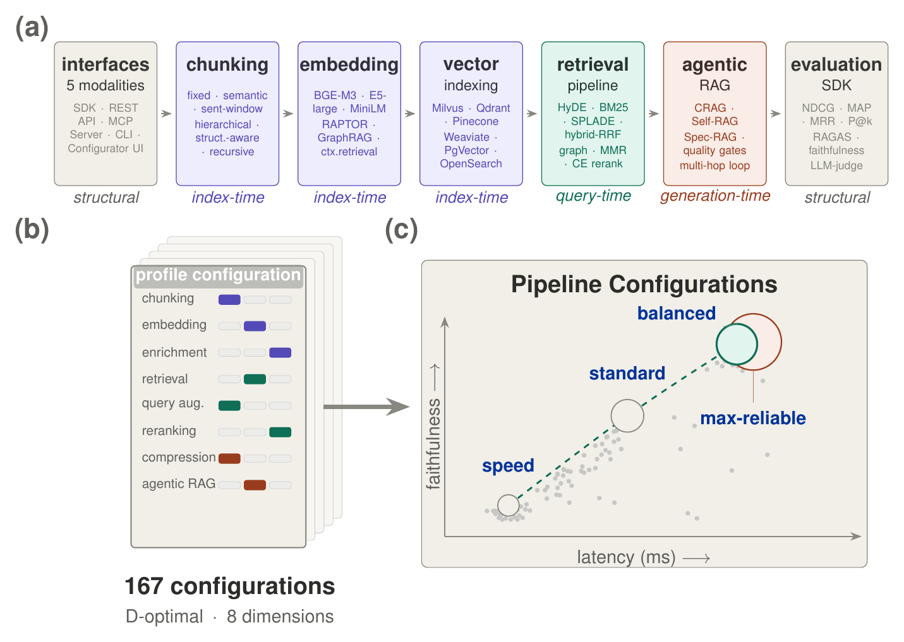
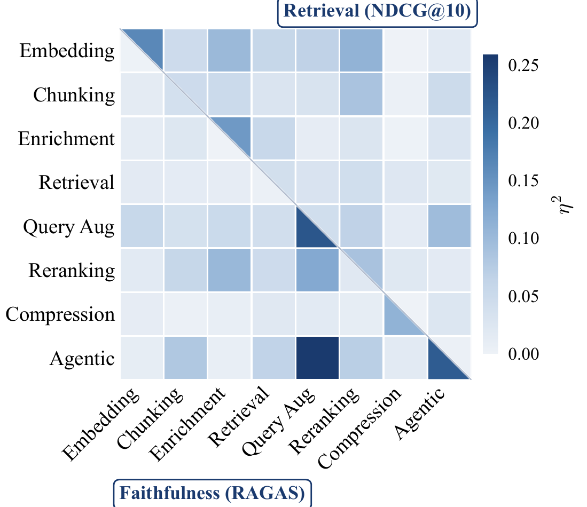
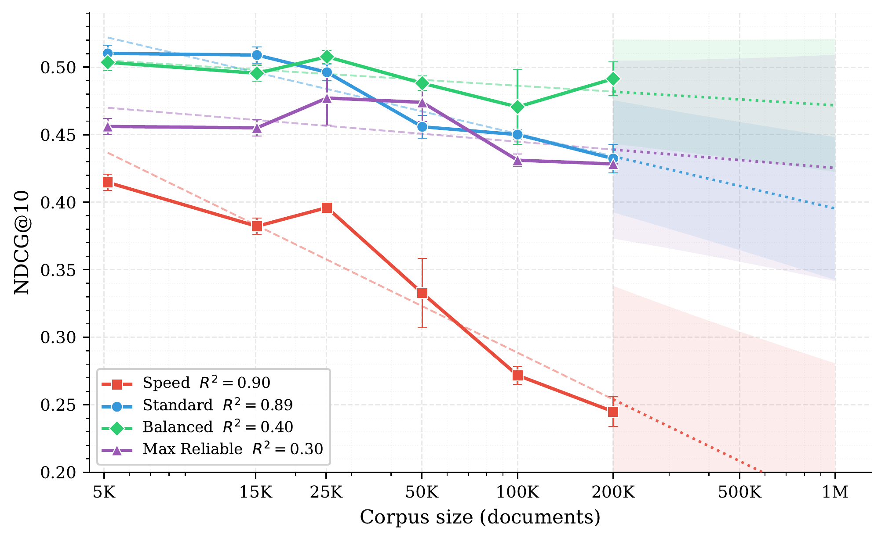

Open source · Apache 2.0
Develop a RAG technique inside the full pipeline
Lasagna is an open-source framework for retrieval-augmented generation. Write one pipeline stage, sweep it against the built-in components with every other stage held fixed, and read a significance-tested verdict.
Why: gains measured one technique at a time do not carry over. In our study, three retrieval techniques predicted a +47% NDCG@10 improvement together and delivered +17%.
The paper · arXiv 2610.29722
Retrieval Augmented Generation Compositionality
- 1IBM
- 2Weizmann Institute of Science
Develop a technique
Write one stage. Test it in the full pipeline.
A technique that helps on its own may add less once the other stages are in place. Lasagna puts your technique in the full stack, changes only that stage, and measures what it adds there.
-
Write one stage
A technique can be a plain Python function. One decorator registers it as a component of its stage, interchangeable with every built-in. Decorators exist for rerankers, query enhancers, chunkers, embedders, retrievers, document processors and generators.
Installpip install lasagna-ragmy_ideas.pyimport lasagna @lasagna.reranker("keyword_overlap") def keyword_overlap(query, text): shared = set(query.split()) & set(text.split()) return len(shared) # score one passage -
Sweep it in a full pipeline
Name your component next to a built-in in a sweep file. Each arm runs through the same pipeline with only that stage changed, and the run records what reached every stage. This sweep uses the speed profile, which needs no API key.
sweep.yamlname: does keyword_overlap help benchmarks: [{name: smoke}] tracks: [retrieval] pipeline: base_profile: speed rerankers: [cross_encoder, "my_ideas:keyword_overlap"] n_runs: 1 # retrieval does not sample -
Read the verdict
Run the sweep, then compare the arms on a benchmark. Each comparison gets a paired sign-flip test, with Holm correction across the sweep. An arm whose ranked lists never moved is flagged as inert.
Runlasagna benchmark experiment sweep.yaml lasagna results significance "<output>/results.json" -m ndcg@10 --all
In short
TL;DR
We pre-declare three hypotheses and test 450 configurations across eight benchmarks and corpora from 5K to 200K documents with LASAGNA, an open-source framework for controlled RAG evaluation.
-
Predicted +47%, realized +17%
Retrieval gain (NDCG@10) predicted from the three strongest single techniques, versus what the combined pipeline delivers
-
Predicted +28%, realized +32%
Faithfulness gain predicted one factor at a time, versus the best full pipeline: faithfulness gains carry over
-
13.7%
NDCG@10 gap at 200K documents for the design that leads at small corpora; the rank flip is visible from 25K
-
450
Configurations across eight benchmarks and corpora from 5K to 200K documents
Paper
Abstract
Retrieval Augmented Generation (RAG) grounds large language models in external knowledge. Modern pipelines combine embedding, chunking, retrieval, reranking, query augmentation, context compression, and agentic verification, yet these techniques are typically evaluated one at a time. It remains unclear whether their isolated gains survive composition, whether retrieval quality and answer faithfulness favor the same design choices, and whether conclusions from small corpora hold at large scale. We pre-declare three hypotheses and introduce Lasagna, an open-source framework for controlled RAG evaluation. We test 450 configurations across eight benchmarks and corpora ranging from 5K to 200K documents. Three findings emerge. First, individually strong techniques from different phases of a RAG pipeline do not necessarily compose: three retrieval techniques predict a +47% combined improvement but deliver only +17% when used together. Second, component gains stack differently for retrieval and faithfulness, and optimizing one can hurt the other. Third, the best composition changes as the corpus grows: the combination that wins on a small corpus may not remain best at large scale. These findings show that gains measured in isolation are not reliable predictors of realistic performance, and that new RAG techniques should be tested with the full surrounding stack. We call on researchers to do so and supply Lasagna to simplify these experiments.
Overview
The question
Modern RAG pipelines combine embedding, chunking, retrieval, reranking, query augmentation, context compression, and agentic verification, yet these techniques are typically evaluated one at a time. It remains unclear whether their isolated gains survive composition, whether retrieval quality and answer faithfulness favor the same design choices, and whether conclusions from small corpora hold at large scale.
The framework
LASAGNA
LASAGNA is an open-source framework for controlled RAG evaluation. Each stage sits behind a fixed interface, so swapping one method cannot silently change the implementation at another. Adding a new technique is a single line of code; the framework tests it inside a complete modern pipeline without reimplementing the surrounding stack. The release has eight swappable stages, from document processing to answer generation, and 55 built-in components.


Findings
Three findings
-
Gains do not simply add up.
Three retrieval techniques predict a +47% combined improvement but deliver only +17% together. Across 17 tested combinations the shortfall ranges from 7% to 72%, with a median of 41%.
-
Retrieval and faithfulness favor different choices.
Embedding, enrichment, and reranking dominate retrieval quality, whereas query augmentation and agentic gating dominate answer faithfulness, so optimizing one metric can hurt the other.
-
The best composition changes with corpus size.
The design leading at small corpora trails by 13.7% NDCG@10 at 200K, with a rank flip visible from 25K.
Composition
Predicted versus realized gains
Gain predicted by adding up separately measured improvements, versus the gain the combined pipeline delivers. Retrieval is NDCG@10 over the stock pipeline; faithfulness is relative to a reference configuration.
| Comparison | Metric | Predicted | Realized |
|---|---|---|---|
| Three strongest retrieval techniques | NDCG@10 | +47% | +17% |
| Best faithfulness components | Faithfulness | +28% | +32% |
Figures
Interactions and corpus scale




Takeaway
What to do with it
New techniques should be tested in representative complete pipelines, on both metrics, and at the intended scale.
LASAGNA is released to make such studies practical and reproducible.
Release
What ships in Lasagna
The framework and evaluation harness from the paper, released under Apache 2.0.
Compare a component, with no model download, corpus or API key
Quickstart in the repository README
Source code on GitHub (Apache-2.0)
Run it in Colab on 100 BEIR SciFact queries, with no API key
In the release
- Eight swappable stages
- Document processing, chunking, embedding, query enhancement, retrieval, reranking, an agentic loop and answer generation. Swap one and the other seven stay fixed.
- 55 built-in components
- Dense, BM25, SPLADE and hybrid retrievers. Cross-encoder, ColBERT, monoT5 and RankGPT rerankers. HyDE, Query2doc, step-back and RAG-Fusion. Self-Ask, IRCoT, FLARE, Adaptive-RAG and Self-RAG loops. Cited (ALCE) and chain-of-note answers. Plus chunkers, embedders and document processors. Each one that implements a published method names its paper.
- Fair arms for chunkers and embedders
- A chunker or embedder under test gets a corpus of its own, chunked or embedded by that component, so the comparison measures the component and not a shared index.
- Stage isolation, checked
- Each run records what reached every stage. If two arms differ at a stage neither of them names, the run says so. An arm whose ranked lists never moved is flagged as inert.
- Paired significance tests
- A paired sign-flip test with a t interval for each comparison, Holm correction across a sweep, and a 2×2 test of whether two techniques compound or overlap.
- Serve it to your agent
- An MCP server for Claude Code, Claude Desktop and Cursor (22 tools by default, none that deletes; 29 with --tools all), a REST API, and a Docker stack for production on any of the six vector backends. The pipeline you measure is the pipeline you serve.
- 31 benchmarks, four metric families
- BEIR, HotpotQA, SQuAD v2, MuSiQue, Natural Questions, MS MARCO and more. Retrieval metrics; answer metrics with and without an LLM judge, including ALCE citation scores; and latency, tokens and LLM calls per query.
It reproduces published numbers
Before you trust a harness with your component, check it on methods whose numbers are already known. On the full SciFact and NFCorpus test sets, with nothing tuned, the dense models land within 0.002 NDCG@10 of MTEB, and BM25 followed by a cross-encoder within 0.004 of the BEIR paper. BM25 alone is within 0.008 of BEIR's multifield run, and 0.015 and 0.005 below its single-field run, which is how Lasagna indexes.
| Method | SciFact, published | SciFact, Lasagna | NFCorpus, published | NFCorpus, Lasagna |
|---|---|---|---|---|
| BM25 (k1 0.9, b 0.4) | 0.665 | 0.664 | 0.325 | 0.317 |
| all-MiniLM-L6-v2 | 0.645 | 0.645 | 0.316 | 0.317 |
| bge-small-en-v1.5 | 0.713 | 0.713 | 0.343 | 0.344 |
| BM25 + MiniLM-L6 cross-encoder | 0.688 | 0.685 | 0.350 | 0.351 |
NDCG@10. Published: BEIR (Thakur et al., NeurIPS 2021, Table 2) and the MTEB results repository.
Glossary
Terms
- LASAGNA
- An open-source framework for controlled RAG evaluation, in which each pipeline stage sits behind a fixed interface.
- Answer faithfulness
- Measures whether generated claims are supported by the retrieved context.
- NDCG@10
- The retrieval-quality metric; it follows the BEIR convention, with retrieved chunks de-duplicated by parent document ID before scoring.
- Composition shortfall
- How far a combined pipeline’s gain falls below the gain predicted from its techniques measured one at a time: a 63% shortfall for the three strongest retrieval techniques.
FAQ
Questions
Do RAG improvements measured one component at a time hold when the components are combined?
Not reliably. In a study of 450 configurations across eight benchmarks, three retrieval techniques that each helped on their own predict a +47% NDCG@10 improvement but deliver +17% when combined. Across 17 tested combinations the shortfall ranges from 7% to 72%, with a median of 41%. Faithfulness gains behave differently and transfer near-additively: +28% predicted, +32% realized. The study uses LASAGNA, an open-source framework for controlled RAG evaluation.
What is LASAGNA?
LASAGNA is an open-source framework for controlled evaluation of retrieval-augmented generation. Each pipeline stage sits behind a fixed interface, so swapping one method cannot silently change the implementation at another. Adding a new technique is a single line of code, and the framework tests it inside a complete modern pipeline without reimplementing the surrounding stack. The release has eight swappable stages and 55 built-in components. A sweep checks that its arms differ only in the stage they name, and it reports a paired significance test for each comparison. LASAGNA was used to test 450 configurations across eight benchmarks and corpora from 5K to 200K documents.
Which RAG methods does LASAGNA include?
The release ships 55 built-in components across eight stages, and each one that implements a published method names its paper. Retrievers: dense, BM25, SPLADE, and hybrid fusion by reciprocal rank or by normalized scores. Rerankers include cross-encoders, ColBERT, monoT5 and RankGPT. Query enhancers include HyDE, Query2doc, step-back prompting and RAG-Fusion. Agentic loops: Self-Ask, IRCoT, FLARE, Adaptive-RAG and Self-RAG; the last two prompt a general LLM where their papers train a model. Generators write concise, cited (ALCE), chain-of-thought or chain-of-note answers. Chunkers, embedders and document processors complete the set.
Does the best RAG pipeline on a small corpus stay the best at large scale?
Not necessarily. In a corpus-scaling sweep from 5K to 200K documents, the design leading at small corpora trails by 13.7% NDCG@10 at 200K, with a rank flip visible from 25K documents. Rankings from small-corpus ablations should therefore be rechecked at the intended corpus scale before a pipeline is chosen.
Do retrieval quality and answer faithfulness favor the same RAG design choices?
No. Across the factorial study, embedding, enrichment, and reranking dominate the retrieval-quality metric (NDCG@10), whereas query augmentation and agentic gating dominate answer faithfulness, which measures whether generated claims are supported by the retrieved context. Optimizing one metric can hurt the other, so new RAG components should be evaluated on both.
Which benchmarks does the study use?
Eight benchmarks unified into one multi-domain corpus: five BEIR sets for retrieval (NFCorpus, FiQA, SciFact, ArguAna, HotpotQA) and three question-answering sets for generation (SQuAD v2, HotpotQA, MuSiQue). Each configuration is evaluated on a retrieval track and an end-to-end generation track, with corpora scaled from 5K to 200K documents in the scaling study.
Cite
Citation
@misc{levy2026retrieval,
title = {Retrieval Augmented Generation Compositionality},
author = {Levy, Ido and Shlomov, Segev and Choshen, Leshem},
year = {2026},
eprint = {2610.29722},
archivePrefix = {arXiv},
primaryClass = {cs.CL},
url = {https://arxiv.org/abs/2610.29722}
}